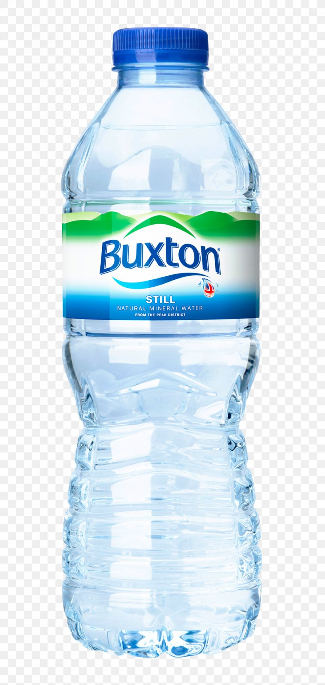
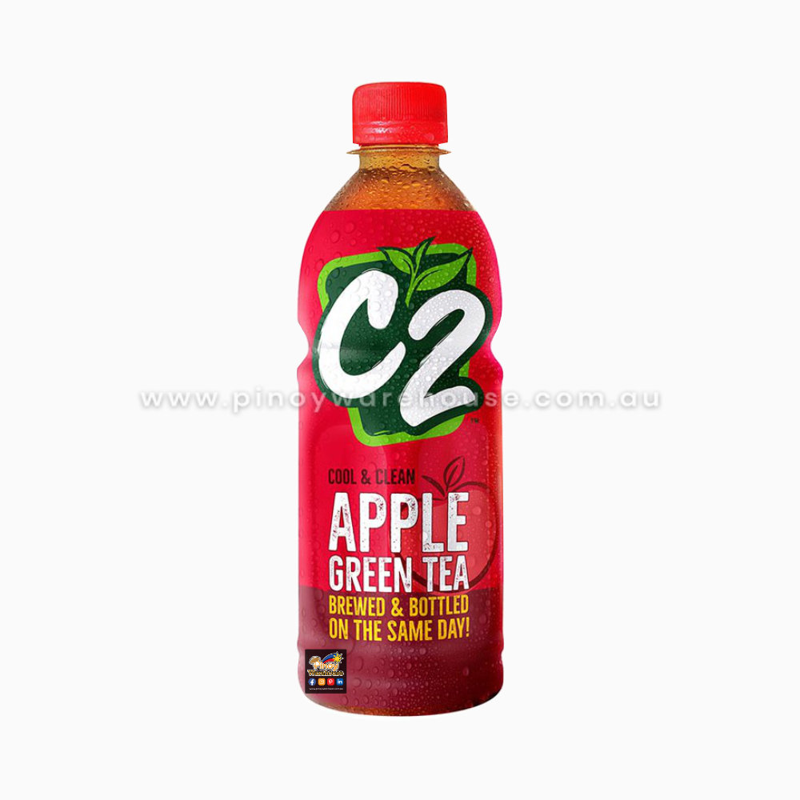
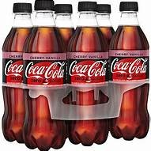
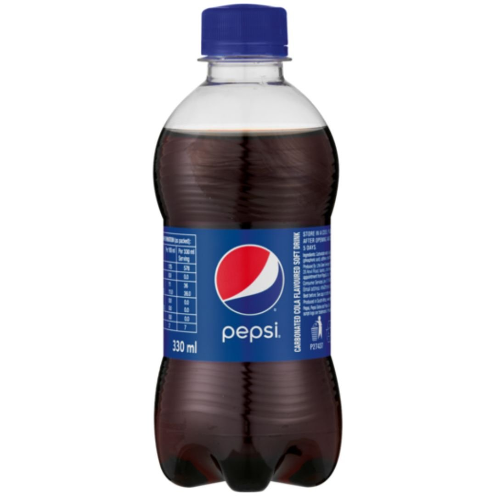
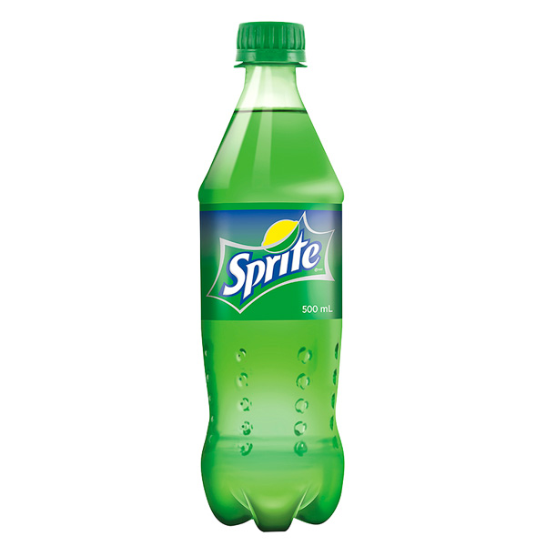
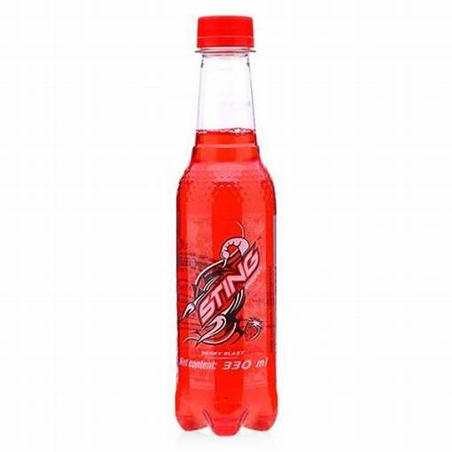

Monday-Sunday: 7:00 A.M-9:00 P.M
Banay, Sta. Cruz, Ilocos Sur
09356457325
| Name | Weight/volume | Description | Ingredients/Contents | Image |
|---|---|---|---|---|
| Buxton | 500 ml | A natural mineral water from Buxton, England. It's a healthy way to hydrate without consuming sugar or calories. And it's bottled water is made with 100% recycled plastic. | Natural still mineral |  |
| C2 | 500 ml | C2 iced tea is made from natural green tea leaves and is brewed and bottled on the same day. It is a fresh soft drink that is delicious at any time of the day. This variant is the natural taste without further flavor aditions. | Water, green tea extract, sugar, acidity regulators: E330, E331, E296, antioxidant: E300,flavour, coloring agent: E150c. |  |
| Coca Cola | 8 0z, 12 oz, 1 liter, 1.25 liters | A carbonated, sweetened soft drink and is World's best selling soda. A popular nickname for Coca-cola is Coke. It is manufactured by the Coca-Cola Company. | Carbonated Water, High fructose corn syrup, caramel color, phosphoric acid, natural flavors, caffeine. |  |
| Mirinda | 500 ml,320ml | Mirinda is a brand of soft drink originally created in Spain in 1959 and now owned by PepsiCo with global distribution. Its name may come from Esperanto, meaning "admirable". It is available in fruit varieties including orange, citrus, grapefruit, apple, strawberry, raspberry, pineapple, pomegranate, banana, passionfruit, lemon, hibiscus, guarana, tangerine, pear, watermelon and grape flavours as well as tamarind. | Carbonated Water, Sugar, Acidity Regulators (330, 331), Stabilizers (1450, 445), Preservative (211), Colour (110), Flavour (Natural Flavouring Substances). | |
| Fanta Orange | 500 ml, 330 ml, 12 oz | Fanta Orange is a tongue-tingling & delicious sparkling orange fruit drink that surprises with its intense and refreshing orange taste. This playful fizzy fruit flavoured soda, delivers a bold and bubbly mouthfeel and naturally stimulates senses. Fanta is a refreshing thirst-quencher, always ready, wherever or whenever you need that treat or to reward yourself. | Carbonated Water, Sugar, Acidifier: Citric Acid, Natural Orange Flavors, Preservative: Potassium Sorbate, Vitamin C, Color: Sunset Yellow, Antioxidant: Calcium Disodium(EDTA). | |
| Mountain Dew | 8 oz, 12 oz | Available in just one type in 1964, Mountain Dew is available in more than 10 variations today. Sold under the brand PepsiCo, Mountain dew has been one of the best-selling beverages in the United States. The carbonated drink introduced in the 1960s has come a long way since then. | Carbonated Water, High Fuctose Corn Syrup, Concentrated Orange Juice, Citric Acid, Natural Flavor, Sodium Benzoate, Caffeine, Sodium Citrate, Erythorbic Acid, Gum Arabic, Calcium Disodium EDTA, Brominated Vegeable Oil, Yellow 5. | |
| Real Leaf | 480 ml | Real Leaf Frutcy Iced Tea, made with fruit-flavored black tea. Real Leaf Frutcy Iced Tea redefines cool and awesome. It embodies a whole new level of refreshment that perfectly complements teens thirst for excitement. | Water, Sugar, Acidulant (Citric acid), Natural, nature-identical and artificial flavors, Brewed tea from green tea leaves, Acidity regulator (Sodium citrate), Preservative (Ascorbic acid), Caramel color, Sweeteners (Sucralose, Acesulfame-K), Honey | |
| Pepsi | 8 oz, 1 liter, 1.5 liter | Pepsi is cola flavored soda and is brown in color, similar to that of Coca-Cola. It was renamed Pepsi Cola in 1898 after the root of the word "dyspepsia" and the kola nuts used in the recipe. The original recipe also included sugar and vanilla. | Carbonated water, high fructose corn syrup, caramel color, sugar and phosphoric acid, caffeine, citric acid and natural flavor. |  |
| Sprite | 1.5 liters, 1 liter | Sprite is a lemon-lime flavoured soft drink with a crisp, clean taste that gives you the ultimate cut-through refreshment. Sprite Zero has the same intense, refreshing lemon-lime taste of classic Sprite but with no sugar. Made to quench your thirst and help you keep your cool in any heat. | Carbonated water, Sugar, Acidity Regulator (Citric Acid & Trisodium Citrate), Preservatives (Sodium Benzoate), Lime Oil And Lemon Oil (0.001%). |  |
| Sting | 250 ml, 320 ml | Sting drink is an energy drink with an awesome refreshing taste and delicious flavour. Sting drink refreshes you and gives you an energy boost and also charges up to stay full of energy. Sting drink contains Caffeine, Ginseng, and Vitamin B with delicious flavour. | Carbonated Water, Sugar, Acidity Regulators, maltodextrin, artificial flavor, potassium sorbate, sodium citrate, caffeine, sodium hexametaphosphate, sodium benzoate, inositol, sodium benzoate, modified food starch, pyridoxine hydrochloride, niacinamide, and cyanocobalamin. |  |